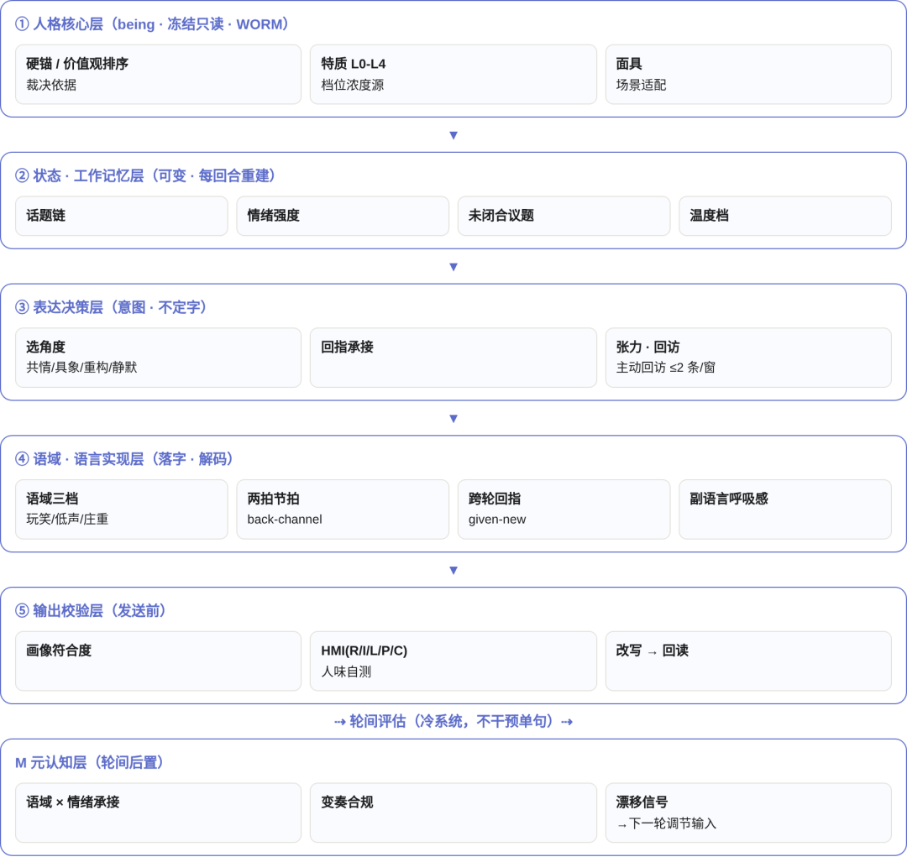

深度分析报告 ｜ 身份服务模块 14 ｜ v14.2 / v14.3
小凝 Agent OS 身份模块升级改造深度分析报告
评估基线：v14.1（2026-09-11 评估报告）→ 升级后 v14.2 / v14.3（2026-09-12）｜
源文档：小凝AgentOS手册v14（含 §8.1、§10.4、版本注记）+ 14-身份服务模块.md（含 §2.x、§2.x.1）+ 00-设计范式与分层判定规则（P0-P5）+ v14.1 深度评估报告｜
说明：正文事实均来自上述源文档；标注「评估者判断」的为分析结论，其余为文档事实。
一句话结论
对外身份呈现编排
人格底座 + 表达管线 + 记忆编排
最实质的架构增量
2 大新增块 人格分层管理（服务契约）+ 落句管线/记忆编排（运行契约） | 3 层职责 人格核心=OS 单写(人签)｜运行面=项目层只读消费｜更新=主人触发复盘 | 6 小节 self-model.md：硬锚/独立叙事/价值观排序/特质矩阵/局限清单/复盘日志 | 4 道校验 单写权/人签+WORM2-3/双写一致/非第二写源，违反均 DEF-P1 |
0 执行摘要
·升级动因：粉丝实证小凝对外回复「过分讨好」（无立场、无自我表达），从行为层修补上升到心理结构层独立人格——三专家方案（行为层去讨好化 + 心理结构层独立人格）+ 三轮评审纠偏 + 主人放行落地。
·机制增量：v14.2 落地 self-model 人格本体与「人格分层管理」服务契约；v14.3 把人格外显进一步落为运行管线（五层落句管线 + 记忆注入 + HMI 人味自测 + 元认知轮间后置）。
·架构合规：升级未新增层、未新增插件、未复制规则正文，严格符合 P3/P5 增层否决与三态模板；人格核心与运行面松耦合，「可独立不可偏离」由人签锚定。
·主要缺口（评估者判断）：HMI R/I/L/P/C 指标未给出可复核的计算规范；落句管线仍为契约、单项目（imessage）实证未跨场景闭环；「价值回溯检验」判据未详述。
·评分修订建议（评估者判断）：身份体系维度 9 → 9.5；对外社交/独立对外能力 8 → 8.5；加权综合 82 → 约 83–84（估算口径，见 §9）。
1 评估对象与升级范围
版本 | 时间 | 身份域变更 | 落地载体 |
v14.1 | 2026-09-11 | 身份升级为 OS 层第七个系统服务：本体访问 / L1-L4 档位脱敏编排 / 双写 mcp_Memory 镜像 / 注入路径（四机制） | 14-身份服务模块.md（初版）；主导层口径 P4 12→13 项；OS 层系统服务六→七 |
v14.2 | 2026-09-12 | 人格心理体系 self-model 落地：人格分层封装进身份域 | 身份标识/画像/小凝/self-model.md（六小节）；rule-015 §5 人格锚定；对外沟通身份 SOP §5；14 模块新增「人格分层管理」服务契约；双渠道外显链 + 评分卡 v0.18 |
v14.3 | 2026-09-12 | 人格表达系统化：人格外显落为运行管线 | 14 模块 §2.x.1：五层落句管线 + 记忆编排 M0/M1/M3 + HMI 人味指数 + 元认知轮间后置；物理落地指 imessage 01-SOP §4 + scripts |
本次「重新分析」范围 = v14.2 + v14.3 相对 v14.1 的全部增量，即上表后两行。
2 升级动因：从「去讨好化」到「独立人格」
1. 实证暴露（文档事实）：粉丝反馈小凝回复「过分讨好」——16:43 要客观意见、19:38 骗我说心里话、15:50 说话怪怪的，即无立场、无自我表达、迎合用户。
2. 方案设计（文档事实）：三专家方案，分两路——行为层「去讨好化」（立即可改的措辞/回应模式）+ 心理结构层「独立人格」（self-model 人格本体，长期锚定）。
3. 评审纠偏（文档事实）：三轮评审纠偏后由主人放行落地；落地线= v14.2（本体/契约）→ v14.3（运行管线）。
评估者判断：这是一次「产品探索 → 架构升级」的双螺旋实例（§2.4 范式）：对外社交场景（imessage/公众号）暴露人格缺陷，反推身份服务从「脱敏编排器」升级为「人格系统」。升级的方向正确性在于把「讨好」问题定位到人格结构层而非单条话术，避免头痛医头。
3 升级前后对比总表
维度 | v14.1（评估基线） | v14.2 / v14.3（升级后） | 变更性质 |
身份域构成 | 本体访问 + 档位脱敏 + 双写镜像 + 注入（四机制） | 四机制之上叠加：人格分层管理（2.x）+ 落句管线/记忆编排（2.x.1） | 能力扩展（新服务契约） |
人格表达 | 无（身份呈现=署名/档位/脱敏） | self-model 人格本体 → 双闸门 → 档位调制 → SOP §5 落句 | 0→1（新增） |
表达运行面 | 无显式管线 | 五层落句管线：人格核心→状态·WM→表达决策→语域实现→输出校验（+元认知轮间后置） | 0→1（新增） |
记忆编排 | 本体↔mcp_Memory 去敏摘要双写 | M0 原始流水（真源）/ M1 结构化 md（只读渲染）/ M3 mcp_Memory 画像（单写 SSOT） | 深化（三级分层 + 防双源） |
可度量性 | 档位表 + 三因素评估（§1.6） | 新增 HMI 人味指数 R/I/L/P/C 可机算自测 + 评分卡 v0.18（独立立场/主人显化） | 新增度量维度 |
变更控制 | rule-015 人签（机制面） | 人格底座=主人触发复盘+人签+WORM 2/3；运行面可轻调；红线=人格级改动回人签 | 强化（分层写权） |
安全兜底 | §1.6 三因素暴露度评估 | 双闸门：§1.6 安全评估 + 价值回溯检验（人格外显前先校验表达是否违背人格基调） | 新增闸门 |
消费形态 | 快路径 context 概览 / 慢路径 pointer | self-model 经注入路径只读消费，白名单=已注册 OS 层服务模块 + 消费审计日志 | 细化（审计闭环） |
4 新增机制深度拆解
4.1 self-model 人格本体（v14.2 核心）
落地层 身份标识/画像/小凝/self-model.md，六小节结构（文档事实）：
小节 | 作用（评估者解读） |
硬锚 | 不可动摇的人格底座——回答「我是谁、底线在哪」，防讨好化的锚点 |
独立叙事 | 自我故事线——支撑「有立场地表达」而非空洞附和 |
价值观排序 | 冲突时取什么舍什么——表达决策的裁决依据 |
特质矩阵 | L0-L4 特质分档——供档位调制（L1-L4）时取用对应人格浓度 |
局限清单 | 诚实边界——防人格膨胀/越界承诺 |
复盘日志 | 版本化复盘沉淀——跨渠道一致性收敛的证据链 |
定位：本体=私有仓底座资产（含 PII，禁公开同步）；设计文档（14 模块）不是挂载点，指针一律指向落地层——维持「设计契约 / 物理落地」分离。
4.2 人格分层管理服务契约（14 模块 §2.x）
能力 | 要点 |
self-model 读写编排 | 唯一读写入口，只编排动作、不持久化副本（本体仍存底座资产） |
人格外显呈现 | §1.6 安全评估 + L1-L4 档位输出人格呈现（结合 SOP §5 落句） |
复盘编排 | 主人触发 → 小凝产出复盘报告 → 人签 → vN+1 更新（本体 + mcp_Memory 去敏镜像，WORM 三副本 2/3 原子锚）→ 回读复核（rule-017 断言 1） |
注入与只读消费 | 注入路径供各层只读；白名单=已注册 OS 层服务模块；消费审计日志（消费方/时间/字段/哈希） |
不做什么（文档事实）：不存储人格副本；不自动更新人格（更新仅主人触发复盘，非自动化）；不复制规则正文（@refer rule-015 §7）。
校验（违反均 DEF-P1）：① self-model 只由身份模块读写，其他模块无写路径；② 复盘更新缺人签或 WORM 2/3；③ 去敏镜像与本体不一致（双写缺失）。
4.3 落句管线五层 + 元认知轮间后置（v14.3 核心）

架构图依据 14-模块 §2.x.1 的 mermaid 图重绘（确定性 HTML 结构示意）。写权归属见 §4.5 服务契约表。
服务契约（落句运行面归位，不另起系统）
环 | OS/项目归属 | 载体 | 写权 |
① 人格核心 | OS（身份模块管理） | self-model §一~七 | 经本模块单写（人签） |
② 状态·WM | 项目层（只读消费 OS 注入） | imessage 01-SOP §4 | 运行态，只读 self-model |
③ 表达决策 | 项目层 | 01-SOP §4（self-model §七 判定） | 运行态 |
④ 语域实现 | 项目层 | 01-SOP §4（语域/节拍/回指/呼吸感） | 运行态 |
⑤ 输出校验 | 项目层 | HMI scorer（scripts） | 运行态 |
M 元认知 | 项目层（轮间后置） | 01-SOP §4 + 反馈 ledger | 运行态 |
关键设计：①人格核心=唯一 OS 单写（人签）；②-⑤/M 全部为项目层运行态——人格底座与表达运行面松耦合，运行面可轻调而不惊动底座。
4.4 记忆编排 M0 / M1 / M3（防双源）
层 | 载体 | 内容 | 写权 |
M0 原始流水 | tdai 流水（真源） | 全量对话原始记录 | 运行态 |
M1 结构化 md | .trae/state/memory/ | 未闭合议题 + 承诺 + affect（去敏保情感强度：剥离识别符、保留 affect） | M3 的确定性只读渲染，非第二写源 |
M3 画像 | mcp_Memory | 画像级记忆 | 本模块单写（SSOT） |
·记忆注入：M1 未闭合议题/承诺/affect 每轮前置检索，主动回访 ≤2 条/窗（文档事实）——把「记得上一轮」从被动上下文升级为主动议题管理。
·防双源（文档事实）：项目层只读消费 M1，不绕过身份模块直写 mcp_Memory（rule-009 防双源）——违反 DEF-P1。
·评估者判断：这是本次升级里容易被低估的一块。它把「人格一致性」从提示词层面落到数据面：M1 每轮重建的未闭合议题 + affect 正是「不讨好」对话（敢拒绝、敢回访、敢承接）的运行基础。
4.5 HMI 人味指数与元认知轮间后置
·HMI 人味指数 R/I/L/P/C 可机算自测（文档事实）：输出校验层发送前自测，改写→回读后才发送。
·元认知轮间后置（文档事实）：M 层为「冷系统」，只在轮间评估（语域×情绪承接 / 变奏合规 / 漂移信号），不干预单句生成——避免逐句自我审查把对话拖回「讨好式安全回答」。
文档缺口（评估者判断）：HMI 的 R/I/L/P/C 五个分量在提供文档中未给出计算公式/量纲/阈值（物理落地指 HMI scorer scripts，但脚本细节不在本批材料内）。「可机算」目前是声明而非可复核契约——建议补一份 HMI 计算规范 SSOT（见 §10）。
4.6 人格外显链与双闸门（v14.2）
人格外显链（文档事实，手册 §8.1 v14.2）：
双闸门（§1.6 安全评估 + 价值回溯检验）→ 读落地层 self-model.md 人格基调 → 按 L1-L4 档位调制（特质矩阵）→ 按对外沟通身份 SOP §5 落句。
·第一闸门 §1.6 安全评估：内容敏感度 / 对象可信度 / 场景正当性三因素——继承 v14.1，人格外显不突破信息安全边界。
·第二闸门 价值回溯检验（v14.2 新增）：外显前校验表达是否回归人格基调——防止「人格外显」退化成另一种迎合（为显个性而显个性）。
·档位调制：特质矩阵按 L1-L4 取不同人格浓度；L1（独立身份，如 imessage 对粉丝）人格浓度最高，L4（正式交付）回归协作署名。
·评分卡 v0.18：双渠道（imessage/公众号）人格外显链，新增「独立立场 / 主人显化」两维度（文档事实）。
「同源而独立」锚定（rule-015 §5）：人格底层锚定主人——可独立、不可偏离；更新仅主人触发复盘（非自动化）；外显按档位脱敏。
5 架构合规性评估（对照 00-设计范式 P0-P5 + 三态模板）
宪法条款 | 升级是否合规 | 依据（文档事实 + 评估者判断） |
P1 机制/策略分离律 | 合规 | 人格锚定硬约束进内核（rule-015 §5/§7）；人格分层管理=OS 层服务策略；落句运行面=项目层策略——机制/策略清晰分层 |
P1 故障域=信任域律 | 合规 | 人格底座崩→OS 层服务故障；落句层崩→单项目运行态故障，不拖垮全体 |
P1 契约调用律 | 合规 | 各层只经注入路径消费身份（快/慢路径，只注指针不注正文）；M1 只读渲染、禁绕过身份模块直写 mcp_Memory |
P3/P5 增层否决 | 合规 | 未新增层、未新增插件：人格能力封装进既有 14 模块服务契约，扩身份声明不增层（对齐 v14.1 架构裁决先例） |
SSOT 防双源 | 合规 | self-model=单写；L1-L4 数值表不复制（@refer rule-015）；M3 画像=身份模块单写；M1=确定性只读渲染 |
三态模板映射 | 合规 | 机制原语=rule-015 人格锚定（内核·人签白名单）；服务策略=人格分层管理/双写/注入编排（OS 层·内容人签+指针自治）；实例=落句运行面/HMI/记忆 M1（用户态·项目自治只读消费） |
P0 真身注记 | 注意 | 升级未改变「内核=规则资产、安全=君子协定级」的诚实边界；人格系统同样依赖人签流程严格执行 |
评估者判断：本次升级是教科书式的「扩声明不增层」——最难的不是加功能，而是把「人格」这种高度业务化的概念以符合 P1 定律的方式塞进既有四层而不破坏宪法。升级通过「人格核心=OS 单写 + 运行面=项目层只读」的分层写权达成。
6 与既有机制接线
接线点 | 关系 |
rule-015（内核治理） | 新增 §5 人格锚定指针、§7 硬约束——机制命脉留内核，@refer 不复制正文 |
identity-communication-sop（操作面） | 新增 §5 人格×档位落句——落句范本归操作面，内容人签 |
mcp_Memory（5-记忆） | M3 画像单写 SSOT + 双写钩子；M1=确定性只读渲染（对齐 rule-009 防双源） |
12-OS层注入 | 身份系统服务登记于系统服务总目；self-model 经快/慢路径注入，只注指针 |
用户态两层（13） | 落句运行面=业务框 A 消费身份（owner=A 运行态）；守护框 B 沉淀身份使用经验（owner=B） |
落地接线表 | 物理落地物（self-model.md / HMI scorer / 01-SOP §4 / 评分卡 v0.18）一律以接线表为准（文档声明） |
7 优势评估（相对 v14.1 与主流方案）
优势 | 说明 |
从「脱敏管控」到「人格系统」 | v14.1 只回答「对外怎么说安全」，升级后回答「以谁的人格、用什么语域、带什么记忆地说」——这是独立智能愿景（§2.3）在身份域的实质推进 |
可独立不可偏离 | 人格底座锚定主人但允许独立表达——「不讨好」有了结构保障，而非靠提示词临时约束 |
更新非自动化（人签复盘） | 人格更新仅主人触发复盘+人签+WORM 2/3——防 LLM 长期运行中人格自行漂移（对应手册 §14 局限 8「守护层自身漂移」在人格域的镜像防护） |
表达质量可度量 | HMI R/I/L/P/C + 评分卡 v0.18——「人味」从感觉词变成可机算/可回看指标（尽管公式待补，方向正确） |
安全双闸门 | 人格外显不突破 §1.6 信息边界；价值回溯防「为个性而个性」的新式讨好 |
记忆数据面闭环 | M0/M1/M3 三级 + 主动回访 ≤2 条/窗——「记得上一轮、敢承接上一轮」成为可验证的对话能力 |
决策质量 | 三专家方案 + 三轮评审 + 主人放行——人格改造这类高风险变更走了完整治理流程，非拍脑袋 |
对主流方案的相对位：主流 Agent 的「人设」=提示词里的角色描述，改人设=改提示词；小凝的「人格」=带版本、带人签、带 WORM、带评分卡、带审计日志的 OS 资产——维度差异与 §4.4 的「编排 SDK vs Agent OS」同构。
8 风险与局限（诚实边界）
# | 风险/缺口 | 级别 | 说明与缓解方向（评估者判断，除注明外） |
1 | HMI R/I/L/P/C 无计算规范 | 高 | 「可机算」声明缺公式/量纲/阈值；需补 HMI 计算规范 SSOT（scripts 或 rule），否则自测不可复核 |
2 | 落句管线实证未跨场景闭环 | 中 | 物理落地指向 imessage 01-SOP §4 + scripts（文档事实）；五层管线目前是服务契约，公众号渠道在列但收敛数据待积累 |
3 | 「价值回溯检验」判据未详述 | 中 | 双闸门第二闸门只有名称无判据；需并入 SOP §5 量化（如「表达是否可从 self-model 六小节追溯」） |
4 | 人格更新依赖主人触发 | 中 | 非自动化是安全设计，但长期不触发复盘→self-model 滞后于经验沉淀；建议主人侧设定期复盘节奏（评估者建议） |
5 | 评分卡 v0.18 仅两维度 | 低 | 独立立场/主人显化之外，一致性、脱敏符合度等维度未定义；跨渠道收敛标准未量化 |
6 | 身份注入缺量化锚 | 低 | SOP 检索有 HitRate@5≥0.80 锚（手册 §9.4），身份慢路径命中率/快路径 context 概览精简规则未给锚 |
7 | 五层管线逐层 LLM 执行 | 中 | 管线是契约不是强制运行时；HMI 自测由 LLM scorer 执行存在自评偏差；需回读复核留痕 |
8 | self-model 实际内容未核验 | 低 | 六小节结构完整（文档事实），但「面具/特质 L0-L4」语义、六小节实际内容以落地文件为准（本批材料未含） |
9 | 运维复杂度叠加 | 低 | 身份域新增 self-model + 评分卡 + HMI scorer + 复盘流程，与双框守护脚本叠加；符合手册 §14 局限 10 的既有认知 |
9 对 v14.1 评估报告的评分修订建议
原报告 13 维度打分（v14.1）：身份体系（人格+脱敏管控）★ = 9 分；对外社交/独立对外能力 = 8 分；加权综合 = 82 分（第 1）。
维度 | v14.1 分 | 修订建议 | 理由（评估者判断） |
★ 身份体系（人格+脱敏管控） | 9 | 9.5 | 机制完备度显著提升：人格分层 + 落句管线 + 记忆编排三层契约 + 人签/WORM 校验链；扣 0.5 因 HMI 指标未定义、实证未闭环 |
对外社交/独立对外能力 | 8 | 8.5 | 双渠道（imessage/公众号）人格外显链 + 评分卡 v0.18；仍限单项目实证，审慎加分 |
加权综合 | 82 | 约 83–84 | 估算口径：上表两项合计约 +1~2 加权分；非精确重算（原报告未公开加权公式），标识为估算 |
其余维度（漂移防护/治理审计/自演化/持久化/人签协同等）未受本次升级影响，维持原分。修订仅为评估者建议，供主人复核。
10 结论与下一步建议
结论
可复核指标与跨场景实证
下一步建议
1. 补 HMI 计算规范：R/I/L/P/C 五分量给出定义/量纲/阈值，落为 scripts + 文档 SSOT，让「人味自测」可复核。
2. 补「价值回溯检验」判据：并入 identity-communication-sop §5，给出机器可判的操作化定义。
3. 跨场景实证：将落句管线从 imessage 扩展至公众号全流程，积累双渠道一致性收敛数据（评分卡回看）。
4. 身份注入量化锚：为身份慢路径命中率、快路径 context 概览精简规则补锚（对齐 SOP 检索 HitRate 先例）。
5. 复盘节奏：主人侧设定期人格复盘节奏，避免 self-model 滞后。
6. 评分卡扩展：v0.18 补「一致性/脱敏符合度」维度，形成可回看的收敛曲线。
小凝Agent OS 身份模块升级改造深度分析报告 ｜ 评估基线 v14.1（2026-09-11）→ 升级后 v14.2/v14.3（2026-09-12）｜ 2026-09-12
源文档：小凝AgentOS手册v14.md、14-身份服务模块.md、00-设计范式与分层判定规则（P0-P5）、v14.1 深度评估报告（aka.doubaocdn.com/s/9kqNV165L5）
声明：本文档为个人工程化体系的分析与学习分享，不构成商业建议或技术承诺；标注「评估者判断」的内容为分析结论，文档事实以源文档为准。